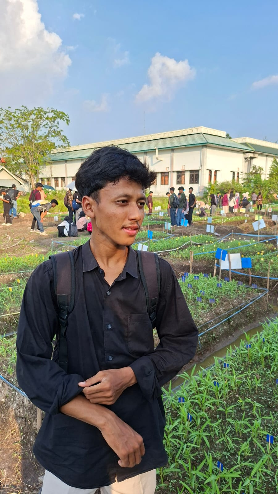
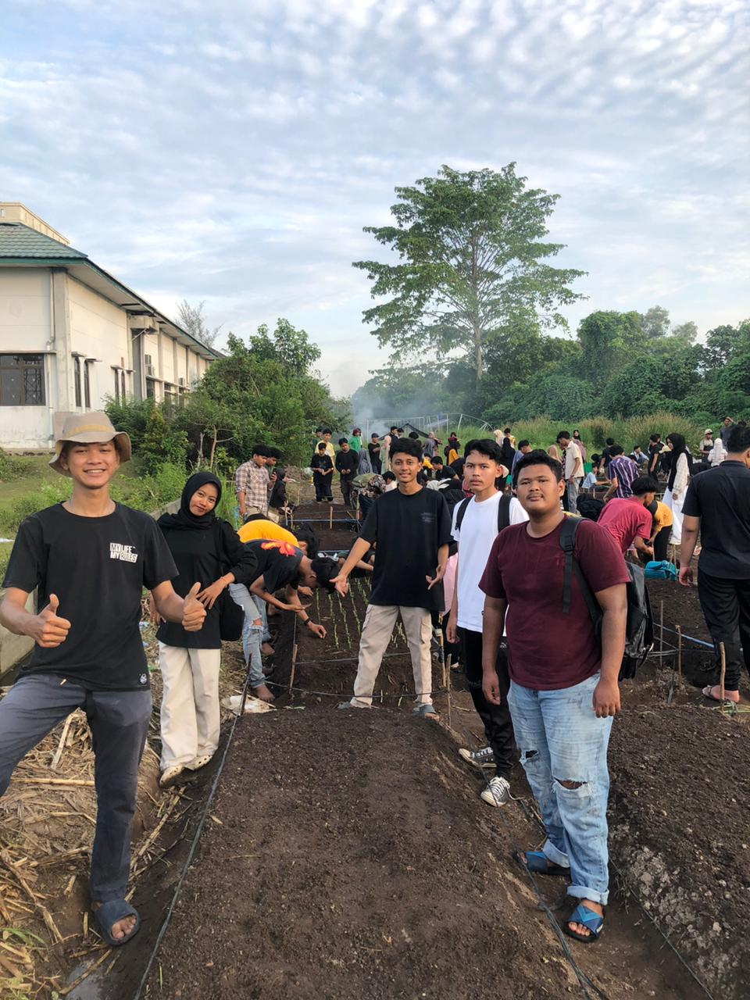
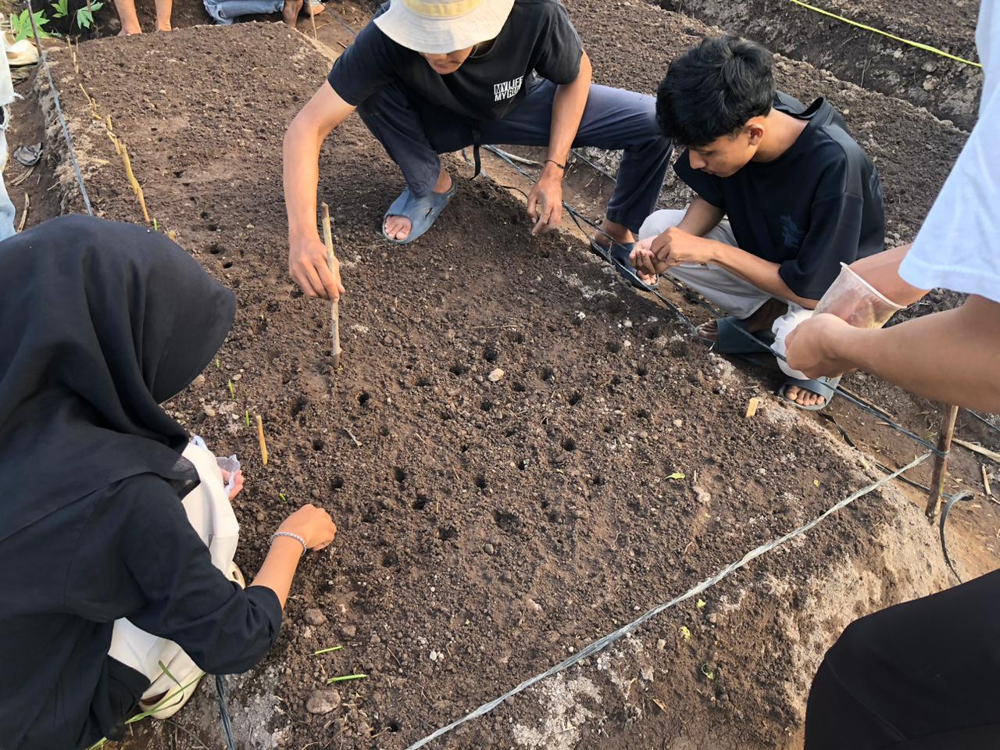
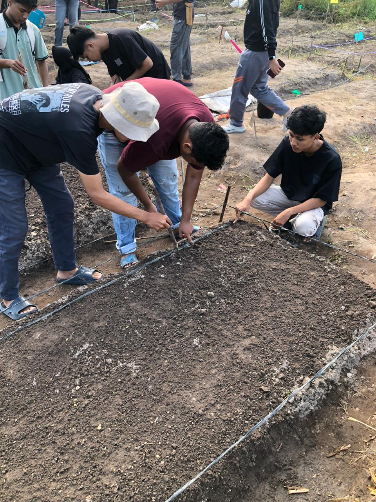
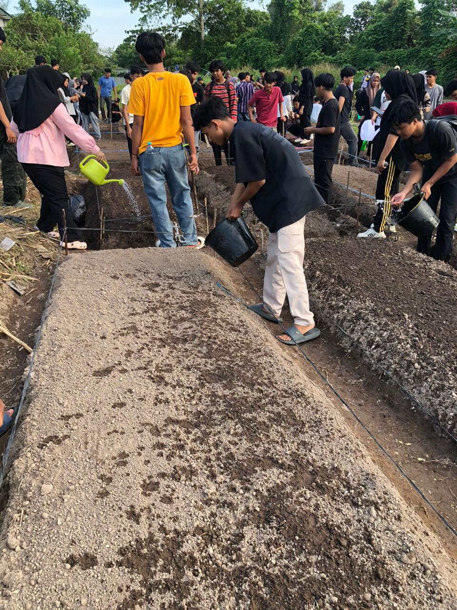

Semangat belajar, bertani, dan berkembang bersama dunia agroteknologi modern.
Lihat Galeri Hubungi SayaSaya memiliki ketertarikan dalam bidang agroteknologi dan kegiatan budidaya tanaman.

Saya menyukai kegiatan praktik agroteknologi, terutama dalam proses budidaya tanaman kangkung mulai dari persiapan media tanam, penyiraman, hingga penanaman benih. Saya percaya bahwa pertanian modern membutuhkan ketelitian, semangat, dan proses belajar yang terus berkembang.
Budidaya Tanaman
Perawatan Media
Agroteknologi
Kemampuan dan pengalaman saya dalam bidang agroteknologi.
Memahami proses dasar budidaya tanaman mulai dari persiapan hingga perawatan.
Memiliki pengalaman praktik dalam kegiatan pertanian modern dan pengelolaan tanaman.
Konsisten menjaga kelembaban dan pertumbuhan tanaman agar berkembang optimal.
Dokumentasi kegiatan praktik agroteknologi dan budidaya tanaman.



Project sederhana yang saya kerjakan dalam bidang budidaya tanaman.
Project ini berfokus pada proses budidaya kangkung mulai dari pembuatan lubang tanam, penyiraman media, hingga penanaman benih sebagai bagian dari praktik agroteknologi modern.
Terbuka untuk diskusi dan berbagi pengalaman tentang dunia agroteknologi.
Mari terhubung dan berbagi pengalaman tentang budidaya tanaman dan agroteknologi.
WhatsApp: 085219314984